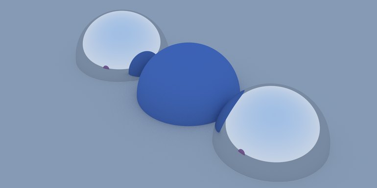

Introduction
Welcome to the PotatRaycer documentation! In this documentation, you will have the opportunity to examine the source code of our raytracer in detail, as well as understand the various aspects of its design and operation.
Code Overview
Our source code is available in its entirety on GitHub. You can access it by following this link: Source Code
Code Details
- Classes
- We use a set of classes to organize our code in a modular and maintainable way. Each class is responsible for a specific feature of PotatRaycer, making it easier to understand and manage the code.
- Interfaces
- We have implemented several interfaces to define contracts between different parts of our system. These interfaces ensure consistency in interactions between different components of PotatRaycer.
- Design Patterns
- Builder
- Utilized to construct our scene in a modular fashion, allowing us to assemble a complex object that includes all lighting and other elements.
- Decorator
- Applied to enhance objects by adding colors and materials, and to compute reflections.
- Observer
- Employed to monitor the state of our construction and facilitate the coordination of multithreading activities.
- Feature Overview
- Our raytracer offers a wide range of features, from advanced geometric modeling to realistic lighting. You can explore these features by examining the corresponding source code in our GitHub repository.
Render from our PotatRaycer
